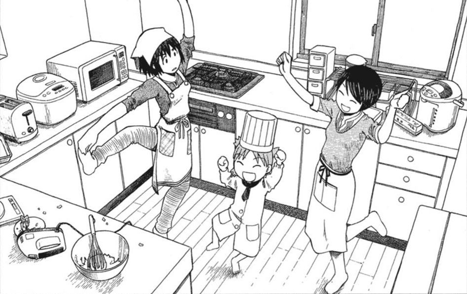
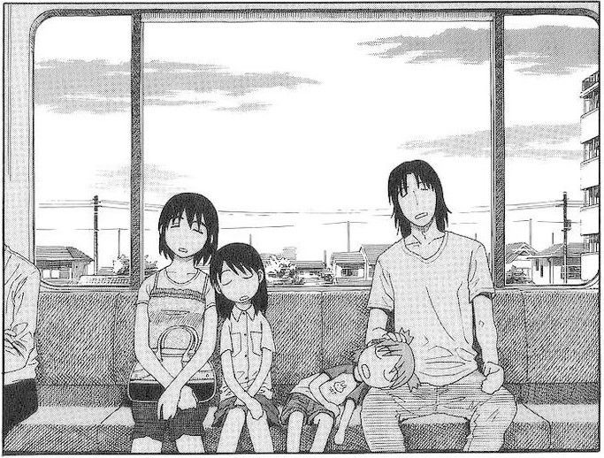
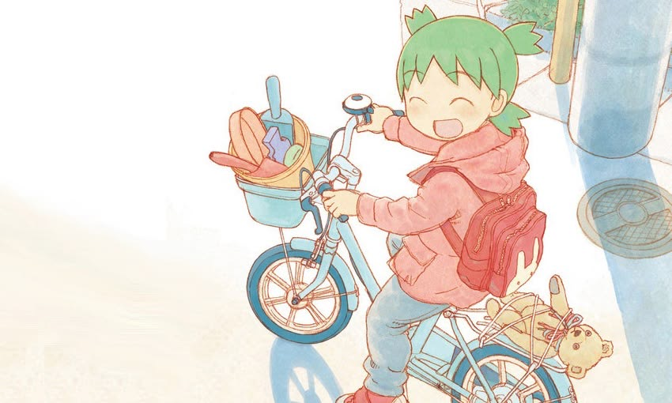
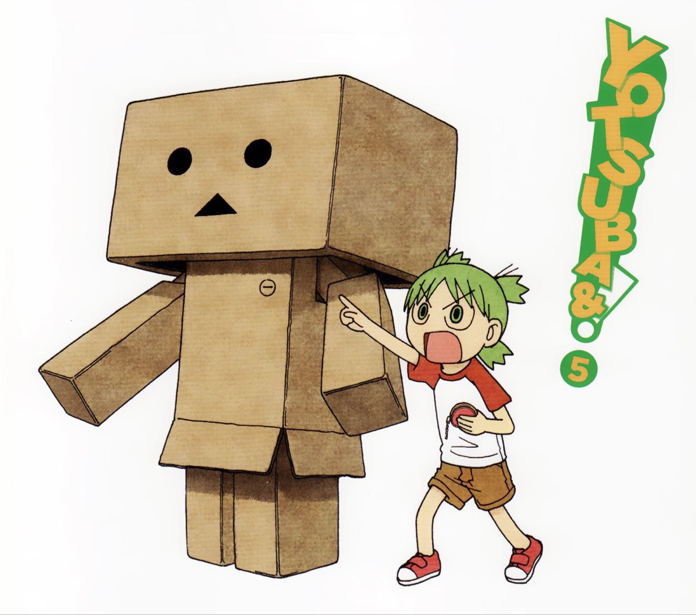

Xuất bản lần đầu năm 2003, Yotsuba&! lựa chọn một cách kể khá đặc biệt: tác giả đặt nhân vật vào những tình huống rất đời thường rồi quan sát cách cô bé nhìn thế giới. Chính sự đơn giản ấy lại trở thành yếu tố tạo nên sức hút lâu dài của bộ manga.

Một thế giới được nhìn qua đôi mắt trẻ thơ
Điểm hấp dẫn nhất của Yotsuba&! nằm ở cách bộ truyện biến những việc nhỏ nhặt thành những trải nghiệm đáng nhớ. Với Yotsuba, một chuyến đi công viên, một lần gặp người hàng xóm hay một món đồ mới xuất hiện đều có thể trở thành chuyện lớn. Cô bé tò mò, dễ phấn khích và luôn muốn tự mình khám phá mọi thứ xung quanh.

Cách nhìn ấy tạo ra sự đối lập thú vị với người đọc trưởng thành. Những điều vốn đã quá quen thuộc với người lớn lại trở nên mới mẻ khi được nhìn từ góc nhìn của một đứa trẻ. Yotsuba không cố gắng giải thích thế giới theo cách logic của người lớn. Cô bé đơn giản là trải nghiệm nó, đặt câu hỏi, mắc lỗi rồi tiếp tục khám phá.
Vì vậy, đọc Yotsuba&! đôi khi giống như nhìn lại những điều bình thường bằng một góc nhìn khác. Bộ truyện không cần liên tục tạo ra cao trào nhưng vẫn có thể khiến người đọc chờ đợi xem Yotsuba sẽ phát hiện ra điều gì tiếp theo.
Yotsuba và những người lớn xung quanh
Thế giới của Yotsuba không chỉ được xây dựng bởi cô bé. Xung quanh nhân vật chính là một nhóm người lớn và những người bạn hàng xóm với tính cách rất khác nhau.
Yotsuba sống cùng Yousuke Koiwai, người cha nhận nuôi cô bé và làm công việc tự do. Nếu Yotsuba luôn hoạt động hết công suất thì Yousuke lại có vẻ bình thản, đôi khi khá xuề xòa. Tuy nhiên, phía sau sự thoải mái ấy là một người cha luôn tôn trọng sự tò mò và tính độc lập của con.
Điều đáng chú ý là Yousuke không biến mình thành người luôn đứng ra giải quyết mọi vấn đề cho Yotsuba. Anh để cô bé tự trải nghiệm, tự giao tiếp và tự nhận ra những điều mình chưa hiểu. Chính cách xây dựng mối quan hệ này khiến tình cảm giữa hai cha con trở nên tự nhiên thay vì quá lý tưởng hóa.
Bên cạnh đó là gia đình ba chị em Ayase cùng những người bạn của Yousuke. Mỗi nhân vật đều có cá tính riêng và thường xuyên tham gia vào những cuộc phiêu lưu nhỏ của Yotsuba. Họ không đơn thuần tồn tại để làm nền cho nhân vật chính mà góp phần tạo nên một cộng đồng gần gũi, nơi một cô bé có thể thoải mái khám phá thế giới của mình.

Khi người lớn cũng được phép trẻ con
Một điểm khá thú vị của Yotsuba&! là bộ truyện không xây dựng thế giới theo kiểu trẻ con luôn đúng còn người lớn luôn hiểu biết. Những người trưởng thành trong truyện cũng có lúc vụng về, ngốc nghếch, bất cẩn hoặc đưa ra những quyết định rất khó hiểu.
Điều này khiến thế giới của Yotsuba trở nên gần với đời sống thực tế hơn. Người lớn không phải những nhân vật hoàn hảo đứng ngoài cuộc sống của trẻ em. Họ cũng có những sở thích, khuyết điểm và những khoảnh khắc ngớ ngẩn của riêng mình.
Nhờ đó, Yotsuba&! có thể tiếp cận đồng thời hai nhóm độc giả. Trẻ em có thể tìm thấy một nhân vật gần gũi để đồng hành, trong khi người trưởng thành lại dễ bắt gặp những ký ức hoặc cảm xúc từng xuất hiện trong tuổi thơ của chính mình.
Không có những cuộc phiêu lưu lớn, nhưng vẫn đủ cuốn hút
Với một manga đời thường, vấn đề lớn nhất luôn là nhịp kể. Nếu câu chuyện chỉ xoay quanh những việc quá bình thường, tác phẩm rất dễ trở nên đơn điệu. Yotsuba&! giải quyết điều này bằng cách tập trung vào trải nghiệm thay vì sự kiện.
Mỗi chương thường giống một lát cắt trong cuộc sống của Yotsuba. Câu chuyện có thể bắt đầu từ một việc rất nhỏ rồi phát triển thành một chuỗi tình huống hài hước. Đôi khi, phần đáng nhớ nhất thậm chí không nằm ở một “cao trào” cụ thể mà ở cách Yotsuba phản ứng trước những gì xảy ra.

Nhiều khoảng lặng và những khung tranh không có lời thoại cũng được sử dụng để tạo nhịp cho câu chuyện. Người đọc có thời gian quan sát biểu cảm nhân vật, không gian xung quanh và những hành động rất nhỏ. Đây là một lựa chọn phù hợp với tinh thần slice-of-life của tác phẩm.
Nét vẽ phục vụ cho câu chuyện
Kiyohiko Azuma không sử dụng một phong cách hình ảnh quá cầu kỳ để gây ấn tượng. Nét vẽ của Yotsuba&! tương đối đơn giản, nhưng biểu cảm nhân vật được khai thác hiệu quả.
Đặc biệt, Yotsuba thường được đặt ở trung tâm của khung truyện với những biểu cảm và hành động rất giàu năng lượng. Cách nhân vật di chuyển, phản ứng và tương tác với môi trường xung quanh giúp những tình huống đời thường trở nên sinh động hơn.
Sự đơn giản trong hình ảnh cũng giúp người đọc tập trung vào hành động và cảm xúc của nhân vật. Đây là một trong những yếu tố khiến Yotsuba&! có thể duy trì nhịp kể chậm mà không hoàn toàn trở nên tĩnh.
Từ Yotsuba đến Danbo
Nếu chỉ biết đến Danbo qua những bức ảnh trên Internet, nhiều độc giả có thể không nhận ra rằng nhân vật hình hộp bằng bìa carton này thực chất xuất hiện trong Yotsuba&!.
Danbo bắt nguồn từ một bộ trang phục do Miura và Ena tạo ra trong câu chuyện. Yotsuba lại tin rằng đó là một robot thực sự, khiến hai nhân vật phải tiếp tục “duy trì” hiểu lầm của cô bé.
Sau đó, Danbo bước ra khỏi phạm vi của manga và trở thành một nhân vật phổ biến trên Internet. Các mô hình Danbo được sản xuất thương mại từ cuối những năm 2000, góp phần đưa hình ảnh nhân vật này đến với một lượng lớn người dùng mạng.

Điều thú vị nằm ở chỗ Danbo không phải nhân vật trung tâm của Yotsuba&!. Sự nổi tiếng của nhân vật này phần nào cho thấy sức sống của thế giới mà Azuma xây dựng: ngay cả một nhân vật xuất hiện từ một trò chơi trẻ con trong truyện cũng có thể tồn tại độc lập trong văn hóa đại chúng.
Yotsuba&! có gì để lại sau khi đọc?
Điểm mạnh của Yotsuba&! không nằm ở một cốt truyện phức tạp mà ở khả năng khiến những điều rất bình thường trở nên đáng chú ý. Bộ truyện nhắc người đọc rằng trải nghiệm của một ngày không nhất thiết phải lớn lao mới có ý nghĩa.
Với độc giả nhỏ tuổi, Yotsuba có thể là một người bạn đồng hành trong quá trình khám phá thế giới. Với độc giả trưởng thành, bộ truyện lại đem đến một trải nghiệm khác: nhìn cuộc sống chậm lại và nhận ra rằng sự tò mò, vui vẻ hay khả năng thích thú trước những điều nhỏ bé không nhất thiết phải biến mất khi chúng ta lớn lên.
Yotsuba&! vì thế không phải một manga cần đọc để tìm kiếm những cú twist hay những trận chiến gay cấn. Sức hấp dẫn của tác phẩm nằm ở chính sự nhẹ nhàng của nó. Đọc một chương về Yotsuba có thể chẳng thay đổi điều gì trong cuộc sống, nhưng đủ để khiến một ngày bình thường trở nên dễ chịu hơn.